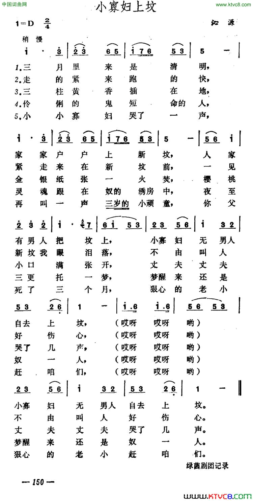

小寡妇上坟
窈窕辙，由姊妹曲种移植而来，山东琴书、河南坠子唱词均与之极为相似。叙一位青年寡妇在给丈夫上坟时，在坟前哭诉自己被公婆、小姑欺凌虐待，及被本村流氓调戏的遭遇。西河大鼓、拉洋片等亦有同名曲目，但情节与山东快书唱词存在出入。 北京刘洪滨常演。 =============================== 王派快板《小寡妇上坟》 剧本台词完整版 二十一岁的小寡妇,扫兴没神儿， 思想起奴家好命苦， 过了门子犯了白裙儿， 死了这个当家的人儿。 过了门子九十二天他没骂过奴家一句儿。 难为他耐性子儿，是一个好脾气儿。 昨夜晚做了个梦啊， 他来要铜子儿。 奴一想接三天了我该去圆坟儿。 带上一块孝包头啊不擦胭脂粉儿， 不系（那个）孝带子， 奴我们系麻批儿， 白布的裹脚， 白布的裤腿儿。 蒙了双白鞋， 白布后跟儿。 穿那么重的孝是怎么会子事儿啊？ 人家是至近的夫妻啊不是外人儿。 打上一捆小烧纸儿， 又拿上一盒南京牌儿的取灯儿。（白：“就是火柴。”） 我有心走着去吧， 出城还十二儿。 正可巧，在我们东街有匹小叫驴儿--外号叫“八里蹦”--四条好快的腿儿， 你要是上重庆它当天打来回儿。 （白：“那位说我不信，您不信？我再糊弄别人儿”） 倒不如今天上坟我借着骑一会儿， 怕的是天短了没有工夫儿。 拉过了驴儿，备好了炕垫儿，拉到了街门外，认蹬一翻身儿， 小寡妇了驴儿， 出去了卡子门儿她来到六里屯儿。 抬头一看，来到了坟地儿。 小寡妇下了驴儿，把头活拴在树根儿。 蹲在了坟前，划开了纸儿， 又压上一块黄土泥儿。 老爷们儿烧纸啊，划个十字儿， 小寡妇划了个圆圈儿留了一个门儿。 划着了洋火，点着了纸儿啊， 真乃是红火白纸冒凉烟儿，着完了化成灰儿。 哭了声丈夫你是个短命的鬼儿， 不会那个坑旁人儿，就会坑媳妇儿。 我们有心守着你的小孤鬼儿， 你们家没有一个成事的人儿。 婆婆嘴碎没事儿找事儿， 小姑子嘴骚爱骂人儿， 老爷子今年都六十岁了， 奴家吃桔子儿，他给剥皮儿。 我心想那么大的年纪没有旁的事儿， 万也没想到天生来的没出息儿。 要不是奴家我们心里有准儿， 我的冤家啊，我的冤家哎！ 你死后也得戴上绿帽子儿。 哭罢了多时搌搌眼泪儿， 没带着洚水盆儿， 寡妇站起来身儿， 树根儿上解下了驴儿。 她认蹬一蹁腿儿， 在驴的后胯两鞭子儿。 她哪知道，这匹小毛驴儿，从清晨起也没喂麸料啊， 也没喝水儿， 横骨插心，肚子里饿犯开了小脾气儿。 你看它不说话啊？它走道不使劲儿， 你越忙它越慢急坏了小佳人儿。 男女全讲嘴上的光棍儿， 小寡妇开玩笑， 央告小毛驴儿 “我的小驴儿唉，我说小驴儿唉， 你今天快快地跑一会儿， 到家我给你一点儿小便宜儿。 量一升麸子、二升小米儿、三升黑豆去了黑皮儿、饱草饱料喂你一顿儿， 怎么那么巧 我们东街底儿碰巧有匹小草驴儿。 把你们俩驴拴在一块儿， 玩上一会儿。 太阳要是一落山，回头没别人儿啊， 你要是冷了铺棉被， 你要是热了铺凉席儿， 门外头再贴上两个大喜字儿，今夜晚小驴儿成家给你娶媳妇儿。 小驴儿闻听是那么会子事儿， 吠儿了吠儿的打响鼻儿，它吠儿了吠儿的打响鼻儿， 支棱支棱耳朵，撅撅尾儿， 瞪瞪眼睛，杠杠鼻儿， 它撩了个蹶子，放了个屁儿， 奔儿叭一蹦进了卡子门儿。（白：“这成电驴儿了。”） 寡妇到家，歇了一会儿， 脱去了白孝换上红裙儿， 带朵花儿，擦点儿粉儿。 进了上房见了婆婆一躬身儿， 参见婆母掉眼泪儿， 婆婆拉住了儿媳妇儿： “我说儿媳妇儿，我说儿媳妇儿，你丈夫死的那天是礼拜二儿， 今日三天才圆坟儿。 穿红挂绿不像会子事儿，你对不起那死鬼对不起那神儿。” 寡妇闻听啊，搌搌眼泪儿， 叫声婆婆听仔细儿， 说守节立志是狗放屁儿， 三从四德是瞒哄人儿。 思想落后啊，欠学习儿， 哪儿来的鬼来，哪儿来的神儿？ 我一朵鲜花儿为的是结籽儿， 这就叫人留后代儿，草留根儿， 明天我们就回家转， 找一个对象嫁旁人儿。 这就是小寡妇上坟啊，一个小段儿， 愿大家学习进步啊，功课积极儿！ ---------------------------------------------------------- 小寡妇上坟-山西民歌
----------------------------------------------------------- 小寡妇上坟（河南大鼓书唱词） 说的是，月儿弯弯挂树梢， 小佳人，绣房以内好心焦。 两眼里，扑簌簌不住地把泪掉， 翻来覆去地睡不着。 皆因为，奴家过门仨月整， 奴家的如意丈夫就死去了。 到白天，干起活来还好过， 漫长的五更天实在难熬。 一更一点合不上眼， 二更二点还是睡不着。 想起来，奴家把那门来过， 俺两个，又恩又爱情意不薄。 俺只说，恩恩爱爱地活到老， 没想到，武大郎盘杠子， 俺上下够不着。 有心就这样守着寡， 可怜俺青春正年少。 要改嫁奴家又害羞， 前思后想我没啥招。 越思越想越难过， 怎么能够睡得着。 就好像，一口吞了二十五只小老鼠， 一百个小爪把心挠。 好容易，鼓打五更打了个盹儿， 梦见了，我的丈夫他又活了。 笑嘻嘻，他在俺的床前站， 穿的戴的，俺还都记着。 上穿着，哈喇叽的青马褂， 下穿着，湖北的洋绸天蓝袍。 穿一双，漂布袜子绣蚂蚁儿， 脚蹬着，关东的香鞋彩缎儿包。 偎了偎，坐到奴的床板上， 脸对脸地把我瞧。 瞧得奴家我心欢喜呀， 上前搂住俺丈夫的腰。 朝着丈夫扑过去—— 哎哟嗨，不好了， 掉下了床，扭住了腰， 摔了我一个狗儿刨， 我啥也没捞着。 自打那，奴家再也睡不着觉， 直哭到太阳上树梢。 哭得我，两眼肿得像鲜桃。 今一天，我不想到别处去， 一心心，上坟来， 给俺丈夫把那纸儿烧。 恁看俺， 头戴白来身穿孝， 三尺白绫系中腰， 白布裤腿白鞋带儿， 绣花鞋，我用那个白布包。 左手里拿着千张纸儿， 右手里，抱着一个浇水的瓢。 我走了，一步两步连环步， 新坟不远可就来到了。 左手里放下千张纸儿， 右手里放下浇水的瓢。 三样东西拿在手， 火纸、火石、火镰刀， 咔嚓一声打着了火， 画了个圆圈我把纸儿烧。 点着烧纸青烟冒， 小佳人，手卡脚脖哭嚎啕。 哭了声天呀叫了声地儿， 奴家的丈夫你咋死去了。 你死你死你自顾死， 撇下的一家人乱七八糟。 大伯哥他是个下贱货， 朝着奴家就发孬。 他不是挤眼就歪嘴儿， 不三不四地用话挑。 奴家只当没看见， 装聋作哑赶紧逃。 那一天， 他把奴堵在二门以上， 喜鼻子笑眼地想动手脚。 小奴家低头急忙跑， 偏叫俺嫂子看见了。 这娘们本来好吃醋， 这一回， 山楂杨梅她是一锅熬。 她不骂丈夫是个下三烂， 倒对奴，比着公鸡骂狸猫。 这女人，生就的是个臊气鬼， 她骂的那脏话水平真高。 小叔子是个势力眼， 小姑子专门抱粗腰。 你活着，她两个嫂子一样看待， 现如今，她处处把俺下眼瞧。 小叔子，看见奴家就翻白眼， 小姑子，那嘴撇得像个棉裤腰。 不知道，她在哪里学来的话， 硬说俺，扫把星招命把你妨死了！ 老婆婆，不是打来就是骂， 回回的，她把奴的毛病挑。 东院里有一个王二哥， 那一天， 他到咱家来借水梢。 奴家跟他说了一句话， 你的娘一蹦尺把高。 她骂我是个下贱货， 天天想把男人招。 也就是老公公对待奴好， 奴做饭他把锅来烧。 我只说，公公烧锅是好意， 没想到，他过来过去地把俺瞧。 俺给他把柴火送， 他伸手就捏奴的脚。 奴家这时心才恼， 才知道，公公想把灰来掏！ 俺在家实在呆不住啊， 就到南院去把菜浇。 俺只说，出得门来好清静啊， 没想到，多年的尿盆子， 里里外外一样地臊。 娘们家见俺就胡议论啊， 爷们家偷偷地把俺瞧。 别的人也就看俺两三眼， 恨死人的他叫李二朝。 这小子，没喝酒假装三分醉， 套近乎，他帮着奴家把辘轳摇。 他两只色迷眼滴溜溜地转啊， 上上下下地把俺瞧。 他本来就比奴的丈夫大呀， 竟管奴家叫嫂嫂。 他嫂子嫂子一个劲儿地叫， 叫得奴家炸汗毛！ 他问我，夜晚睡觉冷不冷？ 一个人怕猫不怕猫？ 我言道：五黄六月咋会冷？ 恁么大个人了我会怕猫？！ 那小子一听不顺意， 停下辘轳不摇了！ 他看着奴家咯咯地笑， 他骂俺，骚狐狸装的什么假正道。 幸亏是，东门的大婶来得巧啊， 要不然，不知道他会对俺怎么着？！ 这些人，欺压小奴还不算， 庙里的老和尚也霸道。 那一天他从我的跟前过， 扭着头，一个劲儿地把奴瞧。 走过去也就是十来步， 秃脑袋，往回扭了二十多遭。 丈夫啊， 我这样，活着不如死了的好， 再不然， 小孩子拉粑粑，我再挪挪脚。 奴家选定一条路， 再不听，三从四德胡叨叨。 一不图，门头悬挂贞节匾， 二不图，节烈牌坊三丈高！ 丈夫啊， 今天我来给你烧张断头纸， 到明天，三幅罗裙我就改嫁了！ 小寡妇，把脚一跺改嫁走， 远走高飞乐逍遥！